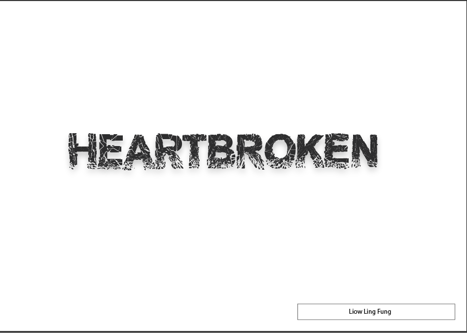
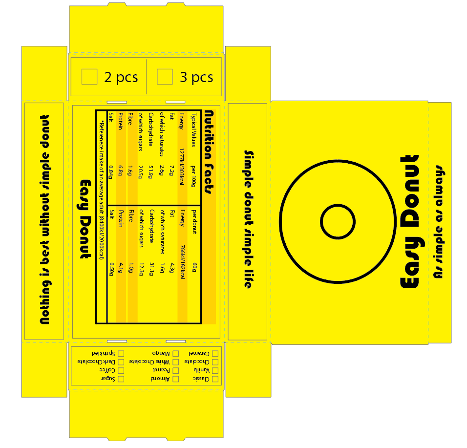
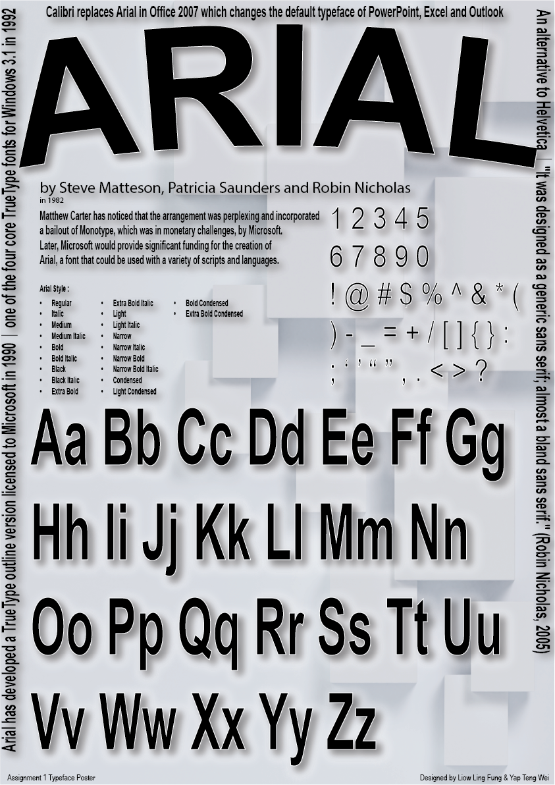

Hi, I am
Ling Fung
Resume
Introduction
Hi, my name is Liow Ling Fung, you can also call me Ling Fung in short. I study as the student of BSc. Hons Multimedia Computing which I made a 2D platformer game project as my final year project. I am very interested in game development especially in game level designs and the game logics. Also, I am a gamer who emphasize the importance of UX experience among gamers as well.
Besides that, I also learn about web development and graphical design in the Multimedia Computing course. In web development, I am familiar with HTML, CSS and JavaScript using Visual Studio Code and Netbeans IDE. For graphic designs, Adobe Illustrator is primarily used for academic projects and Krita is mainly used for creating assets for my own game project. I also know how to use Premiere Pro or After Effects to create videos and animations.
Technical Skills
Game Engine
Unreal Engine 5
Godot Engine
Unity
Programming Languages
C Programming
C#
C++
Java
HTML
CSS
JavaScript
Graphic/Video Production
Adobe Illustrator
Adobe Premiere Pro
Adobe After Effects
Krita
Education Qualification
YPC International College, 2020 - 2024
BSc. Hons Multimedia Computing
Excepted graduation in 2024
Portfolio




This website is used to be tracked by Google Analytic